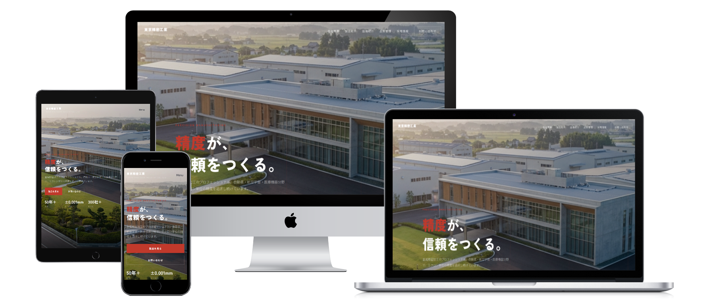

コーディングに着手できず、公開予定が後ろにずれている
デザインは上がっているのに、社内の手が空かず、納期が押している。Figma支給後のHTML/CSS化だけ外に出したい。
DF CONNECTは、Web制作会社様・広告代理店様の外部制作パートナーとして活動する個人事業です。Figma支給後のHTML/CSS実装、WordPress改修、公開前チェック、公開後の軽微修正まで、貴社の進行ルールに合わせて必要な範囲だけ対応します。
NDA前は、クライアント名・URL・詳細情報を伏せた概要だけで構いません。対応可否と進め方を整理してご返信します。
こんな場面で、外部化されています
01 — PAIN POINTS
新規制作だけでなく、下層ページ制作、既存サイト改修、公開後更新まで。
必要な範囲だけ外部化する前提で進めています。
デザインは上がっているのに、社内の手が空かず、納期が押している。Figma支給後のHTML/CSS化だけ外に出したい。
リンク切れ、フォーム送信、OGP / meta、表示崩れ。納品前の最終確認だけ、別の目に通したい。
クライアント情報の共有範囲、納品形式、連絡経路。最初の整理が面倒で、結局社内で抱え込んでしまう。
DF CONNECTは、制作会社様の現場で必要な範囲だけを受ける、外部の制作パートナーです。
02 — ABOUT
DF CONNECTは、Web制作会社様・広告代理店様の外部制作パートナーとして活動している個人事業です。大人数の制作会社ではない分、相談・確認・納品までの連絡経路をシンプルに保てます。対応範囲・納期・連絡ルールを事前に整理したうえで、無理のない形で進めます。

REPRESENTATIVE
不動産管理・設備管理の現場経験を経て、ITエンジニアとしてプロジェクト管理・要件定義・WordPressリニューアル・業務効率化を担当。制作会社様・広告代理店様の外部パートナーとして、Figma支給後の実装、WordPress改修、公開前チェックなどを中心に対応しています。
営業担当と制作者が分かれていないため、相談内容のズレが起きにくい体制です。
短納期や仕様が固まりきっていない案件でも、対応できる範囲と確認が必要な点を先に整理します。
メール、チャット、タスク管理、ファイル共有など、発注元企業様の既存フローに合わせて進めます。
NDA締結前は、クライアント名やURLを伏せた概要のみで問題ありません。
03 — SERVICES
新規制作を丸ごと請けるというより、制作会社様が外部化しやすい実装・改修・確認作業を中心に対応します。
Figma / Adobe XD / 画像カンプからのHTML/CSS実装、レスポンシブ対応。LPや下層ページ、既存サイトへのページ追加など、必要な範囲だけご相談いただけます。
オリジナルテーマのフルスクラッチ開発、固定ページテンプレート作成、カスタム投稿タイプ・タクソノミー設計、既存テーマ修正、フォーム調整に対応します。
テキスト修正、画像差し替え、表示崩れ対応、WordPress更新補助など、公開後に発生する細かな作業に対応します。
表示崩れ、リンク切れ、フォーム送信、OGP / meta確認など、納品前・公開前の確認作業を支援します。
04 — WORK ENVIRONMENT
貴社の既存フローに合わせて作業を進められるよう、対応可能な環境を整理しています。
Design
Figma / Adobe XD / Photoshop / 画像カンプ（PDF・PNG）
Delivery
HTML/CSSファイル一式 / WordPress直接構築 / Git経由 / zip納品 / FTP
Version
Git対応（GitHub / GitLab / Backlog Git）
Comms
Slack / Chatwork / Discord / メール
Dev
Docker（ローカル環境構築対応）/ テストサーバー確認 / XServer等の共用サーバー対応
Browser
Chrome / Safari / Edge / Firefox / iOS Safari
05 — ANONYMOUS WORKS
制作会社様との協力案件では、守秘義務や掲載ルールの都合上、社名・URL・画面キャプチャを掲載できない場合があります。
ここでは、公開できる範囲で担当内容が伝わる形に整理しています。実際の見た目や導線は、下部のデモサイトでご確認ください。
2024年公開
企業サイト / CMS対応 / レスポンシブ
制作会社様の案件にて、既存企業サイトの移設・構築に協力しました。配色調整、スマートフォン・タブレット対応、CMS対応など、既存サイトの印象を大きく崩さない再構築を担当しています。
※ 守秘義務の都合上、社名・URLは掲載していません。
2024年公開
店舗サイト / HTML再構築 / CMS対応 / レスポンシブ
制作会社様の案件にて、既存店舗サイトのHTML再構築に協力しました。既存デザインを活かしながら、スマートフォン・タブレット対応、CMS設定、トップページ更新欄の調整などを行っています。
※ 守秘義務の都合上、社名・URLは掲載していません。
06 — DEMO SITES
実案件は守秘義務の都合上、社名・URL・画面キャプチャを掲載できない場合があります。
そのため、品質確認用のデモサイトを用意しています。スマホ表示、セクション構成、CTA、下層導線、トーンをご確認ください。
※ デモサイトは品質確認用のサンプルです。実際の納品実績ではありません。ソースコードもそのままご確認いただけます。

DEMO 01 — F&B
想定業種：飲食店・カフェ
WordPress自作テーマ / セマンティックHTML / CSSカスタムプロパティ / レスポンシブ
店舗の世界観を伝えるファーストビュー、メニュー・ニュース・アクセスへの導線、スマホでの読みやすさ。
HARU COFFEEを見る
DEMO 02 — REAL ESTATE
想定業種：不動産会社・地域密着型サービス
WordPress自作テーマ / カスタム投稿タイプ / CSS Grid / レスポンシブ
企業サイトとしての信頼感、サービス紹介、問い合わせ導線、BtoC寄りサイトの構成。
LIVESTAを見る
DEMO 03 — MANUFACTURING
想定業種：製造業・BtoB企業サイト
WordPress自作テーマ / セマンティックHTML / Vanilla JS / レスポンシブ
BtoB向けの落ち着いたトーン、強み・製品・会社概要・問い合わせ導線、技術訴求の見せ方。
東京精密工業を見る07 — PROCESS
NDA前は、クライアント名・URL・詳細情報を伏せた内容で問題ありません。
作業内容、納期、支給素材、連絡方法、MTG同席の有無を確認します。
作業範囲、確認回数、納品形式を整理したうえで進めます。
詳細情報やログイン情報の共有が必要な場合は、NDA締結後に進めます。
貴社のチャット、メール、タスク管理、ファイル共有ルールに合わせて進行します。
Chrome・Safari・Edge・Firefox・iOS Safariでの表示確認、HTMLバリデーション、リンクチェック、修正反映を行い、貴社の納品ルールに合わせて提出します。
連絡・共有方法は、貴社の既存フローに合わせて調整します。
08 — SCOPE
個人事業として対応しているため、無理にすべてを引き受けるのではなく、対応できる範囲と難しい範囲を事前に確認します。
OUT OF SCOPE
CASE BY CASE
09 — FAQ
はい、可能です。
ただし、大人数で大量案件を同時に対応する体制ではないため、対応範囲・納期・稼働状況を事前に確認します。継続案件の場合も、無理のない範囲を整理したうえで進めます。
はい。NDA前は、クライアント名・URL・ログイン情報などを伏せた概要だけで問題ありません。詳細共有が必要な場合は、NDA締結後に進めます。
原則として、エンドクライアントとの契約・連絡窓口は発注元企業様でお願いします。必要に応じて、貴社の制作パートナーとしてMTGに同席し、技術説明や仕様確認をサポートすることは可能です。
対応可能です。表記ルール、連絡経路、共有範囲、納品形式を事前に確認し、発注元企業様の方針に合わせて進めます。
いいえ。デモサイトは、制作品質や導線設計を確認していただくためのサンプルサイトです。実案件の詳細は、守秘義務に配慮し、公開できる範囲で個別にご説明します。
公開できる範囲の協力実績を、匿名で掲載しています。社名・URL・画面キャプチャは、守秘義務や発注元企業様の方針により掲載していません。品質確認は、デモサイトをご確認ください。
最初は、作業内容、希望納期、支給素材の有無だけで大丈夫です。たとえば「Figmaあり、LPコーディング希望、6月上旬公開予定」程度の内容でも対応可否を確認できます。
案件の規模・仕様により変動しますが、参考価格帯は以下のとおりです。
正式な金額は、作業範囲・ページ数・仕様を確認したうえで個別にお見積りします。
案件の規模により変動しますが、目安は以下のとおりです。
短納期の場合も、まずは対応可否を確認しますのでお気軽にご相談ください。
GET IN TOUCH
正式な仕様書がなくても問題ありません。
「この作業だけ外に出せるか」「この納期で対応できるか」「既存サイトの改修だけ相談できるか」など、分かる範囲でお送りください。